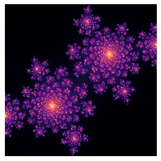
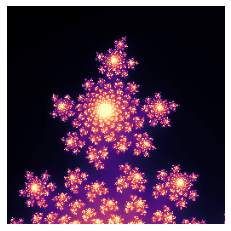

Julia Sets#
The following is a quick introduction to Julia Sets
%matplotlib inline
from matplotlib import pyplot as plt
import numpy as np
import datajoint as dj
def julia(c, size=256, center=(0.0, 0.0), zoom=1.0, iters=256):
x, y = np.meshgrid(
np.linspace(-1, 1, size)/zoom + center[0],
np.linspace(-1, 1, size)/zoom + center[1],
)
z = x + 1j * y
im = np.zeros(z.shape)
ix = np.ones(z.shape, dtype=bool)
for i in range(iters):
z[ix] = z[ix] ** 2 + c
ix = np.abs(z) < 2
im += ix
return im
plt.imshow(julia(-0.4+0.6j), cmap='magma')
plt.axis(False);

plt.imshow(julia(-0.4+0.6j, center=(0.34, -0.30), zoom=10000.0), cmap='magma')
plt.axis(False);

c = (
-0.4 + 0.6j,
-0.74543 + 0.11301j,
-0.75 + 0.11j,
-0.1 + 0.651j,
-0.835 - 0.2321j,
-0.70176 - 0.3842j,
)
noise_level = 5.0
fig, ax = plt.subplots(3, 2, figsize=(7.5, 12))
for c_, a in zip(c, ax.flatten()):
img = julia(c_, zoom=0.5)
img += np.random.randn(*img.shape) * noise_level
a.imshow(img, cmap='magma')
a.axis(False)

Image processing#
from skimage import data
from skimage import filters
from skimage.morphology import disk
from skimage import restoration
noise_level = 50.0
img = julia(-0.4+0.6j, size=200)
noise_img = img + np.random.randn(*img.shape) * noise_level
median_img = filters.median(noise_img, disk(3))
tv_img = restoration.denoise_tv_chambolle(noise_img, weight=20.0)
wavelet_img = restoration.denoise_wavelet(noise_img)
gaussian_img = filters.gaussian(noise_img, sigma=1.8)
fig, ax = plt.subplots(3, 2, figsize=(6, 9))
for a, (im, title) in zip(
ax.flatten(),
((img, 'original'),
(noise_img, 'original+noise'),
(gaussian_img, 'gaussian'),
(median_img, 'median'),
(wavelet_img, 'wavelet'),
(tv_img, 'tv'), )):
a.imshow(im, cmap='magma', vmin=0, vmax=255)
a.axis(False)
a.set_title(title)

DataJoint Pipeline#
Now let’s build a data pipeline managing Julia sets and their analysis
import datajoint as dj
schema = dj.Schema('julia')
[2023-10-29 14:10:42,848][INFO]: Connecting root@127.0.0.1:3306
---------------------------------------------------------------------------
ConnectionRefusedError Traceback (most recent call last)
File ~/opt/miniconda3/envs/benv/lib/python3.10/site-packages/pymysql/connections.py:613, in Connection.connect(self, sock)
612 try:
--> 613 sock = socket.create_connection(
614 (self.host, self.port), self.connect_timeout, **kwargs
615 )
616 break
File ~/opt/miniconda3/envs/benv/lib/python3.10/socket.py:845, in create_connection(address, timeout, source_address)
844 try:
--> 845 raise err
846 finally:
847 # Break explicitly a reference cycle
File ~/opt/miniconda3/envs/benv/lib/python3.10/socket.py:833, in create_connection(address, timeout, source_address)
832 sock.bind(source_address)
--> 833 sock.connect(sa)
834 # Break explicitly a reference cycle
ConnectionRefusedError: [Errno 61] Connection refused
During handling of the above exception, another exception occurred:
OperationalError Traceback (most recent call last)
Input In [11], in <cell line: 3>()
1 import datajoint as dj
----> 3 schema = dj.Schema('julia')
File ~/opt/miniconda3/envs/benv/lib/python3.10/site-packages/datajoint/schemas.py:78, in Schema.__init__(self, schema_name, context, connection, create_schema, create_tables, add_objects)
76 self.declare_list = []
77 if schema_name:
---> 78 self.activate(schema_name)
File ~/opt/miniconda3/envs/benv/lib/python3.10/site-packages/datajoint/schemas.py:120, in Schema.activate(self, schema_name, connection, create_schema, create_tables, add_objects)
118 self.connection = connection
119 if self.connection is None:
--> 120 self.connection = conn()
121 self.database = schema_name
122 if create_schema is not None:
File ~/opt/miniconda3/envs/benv/lib/python3.10/site-packages/datajoint/connection.py:131, in conn(host, user, password, init_fun, reset, use_tls)
127 init_fun = (
128 init_fun if init_fun is not None else config["connection.init_function"]
129 )
130 use_tls = use_tls if use_tls is not None else config["database.use_tls"]
--> 131 conn.connection = Connection(host, user, password, None, init_fun, use_tls)
132 return conn.connection
File ~/opt/miniconda3/envs/benv/lib/python3.10/site-packages/datajoint/connection.py:193, in Connection.__init__(self, host, user, password, port, init_fun, use_tls)
191 self._conn = None
192 self._query_cache = None
--> 193 connect_host_hook(self)
194 if self.is_connected:
195 logger.info("Connected {user}@{host}:{port}".format(**self.conn_info))
File ~/opt/miniconda3/envs/benv/lib/python3.10/site-packages/datajoint/connection.py:52, in connect_host_hook(connection_obj)
48 raise errors.DataJointError(
49 "Connection plugin '{}' not found.".format(plugin_name)
50 )
51 else:
---> 52 connection_obj.connect()
File ~/opt/miniconda3/envs/benv/lib/python3.10/site-packages/datajoint/connection.py:217, in Connection.connect(self)
215 warnings.filterwarnings("ignore", ".*deprecated.*")
216 try:
--> 217 self._conn = client.connect(
218 init_command=self.init_fun,
219 sql_mode="NO_ZERO_DATE,NO_ZERO_IN_DATE,ERROR_FOR_DIVISION_BY_ZERO,"
220 "STRICT_ALL_TABLES,NO_ENGINE_SUBSTITUTION,ONLY_FULL_GROUP_BY",
221 charset=config["connection.charset"],
222 **{
223 k: v
224 for k, v in self.conn_info.items()
225 if k not in ["ssl_input", "host_input"]
226 },
227 )
228 except client.err.InternalError:
229 self._conn = client.connect(
230 init_command=self.init_fun,
231 sql_mode="NO_ZERO_DATE,NO_ZERO_IN_DATE,ERROR_FOR_DIVISION_BY_ZERO,"
(...)
242 },
243 )
File ~/opt/miniconda3/envs/benv/lib/python3.10/site-packages/pymysql/connections.py:353, in Connection.__init__(self, user, password, host, database, unix_socket, port, charset, sql_mode, read_default_file, conv, use_unicode, client_flag, cursorclass, init_command, connect_timeout, read_default_group, autocommit, local_infile, max_allowed_packet, defer_connect, auth_plugin_map, read_timeout, write_timeout, bind_address, binary_prefix, program_name, server_public_key, ssl, ssl_ca, ssl_cert, ssl_disabled, ssl_key, ssl_verify_cert, ssl_verify_identity, compress, named_pipe, passwd, db)
351 self._sock = None
352 else:
--> 353 self.connect()
File ~/opt/miniconda3/envs/benv/lib/python3.10/site-packages/pymysql/connections.py:664, in Connection.connect(self, sock)
662 if DEBUG:
663 print(exc.traceback)
--> 664 raise exc
666 # If e is neither DatabaseError or IOError, It's a bug.
667 # But raising AssertionError hides original error.
668 # So just reraise it.
669 raise
OperationalError: (2003, "Can't connect to MySQL server on '127.0.0.1' ([Errno 61] Connection refused)")
@schema
class JuliaSpec(dj.Lookup):
definition = """
julia_spec : smallint
---
creal : float
cimag : float
size=256 : smallint
center_real=0.0 : float
center_imag=0.0 : float
zoom=1.0 : float
noise_level=50 : float
"""
contents = (
dict(julia_spec=0, creal=-0.4, cimag=0.6, noise_level=50),
dict(julia_spec=1, creal=-0.7453, cimag=0.11301, noise_level=50),
dict(julia_spec=2, creal=-0.75, cimag=0.11, noise_level=50),
dict(julia_spec=3, creal=-0.1, cimag=0.651, noise_level=50),
dict(julia_spec=4, creal=-0.835, cimag=-0.2321, noise_level=50),
dict(julia_spec=5, creal=-0.70176, cimag=-0.3842, noise_level=50),
)
JuliaSpec.insert1(
dict(julia_spec=10,
creal=-0.4, cimag=0.6,
center_real=0.34, center_imag=-0.30,
zoom=10000.0,
noise_level=50.0)
)
@schema
class JuliaImage(dj.Computed):
definition = """
-> JuliaSpec
---
image : longblob
"""
def make(self, key):
spec = (JuliaSpec & key).fetch1()
img = julia(spec['creal'] + 1j*spec['cimag'],
size=spec['size'],
center=(spec['center_real'], spec['center_imag']),
zoom=spec['zoom'],
)
img += np.random.randn(*img.shape) * spec['noise_level']
self.insert1(dict(key, image=img.astype(np.float32)))
JuliaImage.populate(display_progress=True)
JuliaImage()
plt.imshow((JuliaImage & 'julia_spec=2').fetch1('image'))
plt.axis(False);
@schema
class DenoiseMethod(dj.Lookup):
definition = """
denoise_method : smallint
---
method : varchar(16)
params=null : blob
"""
contents = (
(0, 'gaussian', dict(sigma=1.8)),
(1, 'median', dict(radius=3)),
(2, 'wavelet', {}),
(3, 'tv', dict(weight=20.0))
)
@schema
class JuliaDenoised(dj.Computed):
definition = """
-> JuliaImage
-> DenoiseMethod
---
denoised_image : longblob
"""
def make(self, key):
img = (JuliaImage & key).fetch1('image')
method, params = (DenoiseMethod & key).fetch1('method', 'params')
if method == "gaussian":
result = filters.gaussian(img, **params)
elif method == "median":
result = filters.median(img, disk(params['radius']))
elif method == 'tv':
result = restoration.denoise_tv_chambolle(img, **params)
elif method == "wavelet":
result = restoration.denoise_wavelet(noise_img, **params)
else:
raise NotImplementedError
self.insert1(dict(key, denoised_image=result))
dj.Diagram()
JuliaDenoised.populate(display_progress=True)
JuliaDenoised()
keys = JuliaDenoised.fetch('KEY')
img = ((JuliaDenoised & keys[0])).fetch1('denoised_image')
plt.imshow(img)
plt.axis(False);